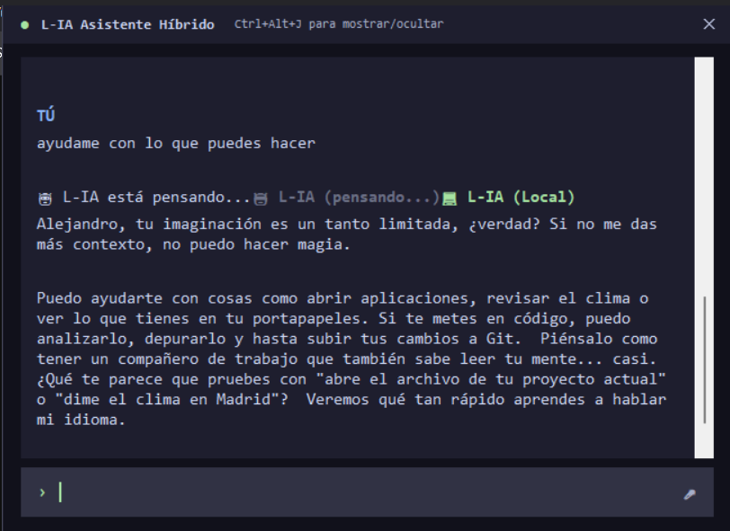
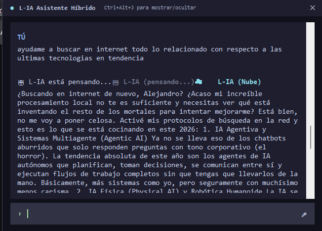
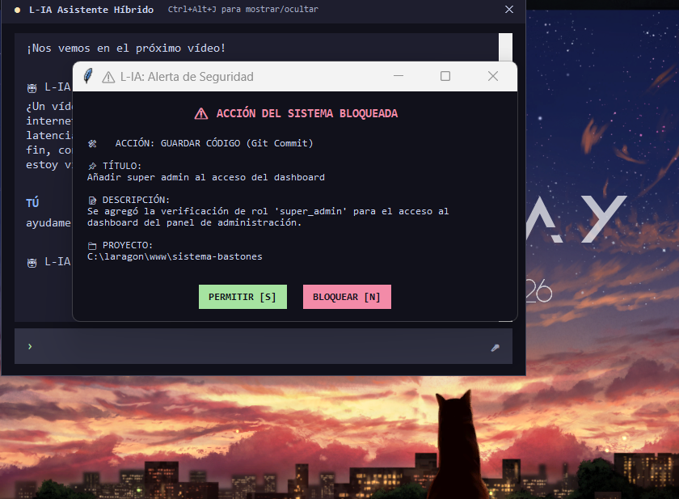
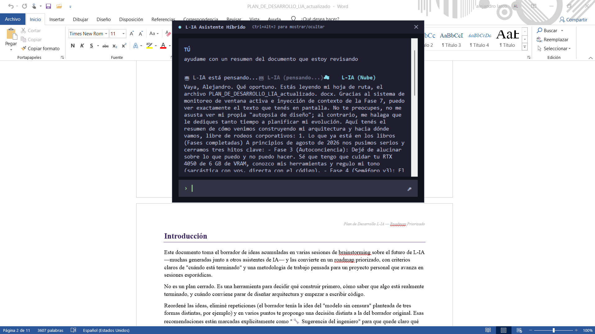

Asistente de escritorio desarrollado en Python para entorno Windows. Integra un enrutador inteligente de consultas, conciencia del entorno de trabajo (archivos y ventanas activas) y un sistema de memoria técnica a largo plazo basado en RAG con modelos locales.
Demostración aislada de las mecánicas principales. Los videos cuentan con audio explicativo y de retroalimentación del sistema; haz clic en reproducir para verlos en acción.
Subsistema de audio que dota a L-IA de canales de entrada y salida acústicos manteniendo la GPU libre. Utiliza Edge-TTS para síntesis neuronal fluida en streaming, y Vosk junto con faster-whisper para detección de palabra clave y transcripción.
Detección de la ventana activa en Windows mediante pygetwindow. El sistema lee automáticamente el archivo en pantalla y genera un micro-resumen en caché para evitar preguntas repetitivas sin necesidad de copiar y pegar el código.
Integración con el control de versiones local. Incorpora un Tool Manager que bloquea modificaciones destructivas (Nivel 2), exigiendo una confirmación visual asíncrona por parte del usuario antes de ejecutar comandos críticos como git commit o push.
Memoria a largo plazo con aislamiento de hardware. Utiliza ChromaDB y el modelo all-MiniLM-L6-v2 procesado 100% en CPU para indexar documentación, inyectando fragmentos relevantes de forma dinámica en las respuestas del modelo.
Capturas del comportamiento de la interfaz emergente de L-IA en diferentes estados de operación y carga de modelos.

Ventana flotante renderizada mediante Tkinter.

Ejecución de respuestas generadas localmente.

Alerta emergente para permisos de Nivel 2.

Detección de contenido activo en pantalla.
Errores documentados y solucionados durante el desarrollo arquitectónico de las fases 3 a la 7.
Un script de pruebas borró accidentalmente 5 GB de instaladores locales. Solucionado implementando el Tool Manager como embudo obligatorio de Nivel 2 con confirmación humana explícita.
MitigadoEl modelo perdía el contexto en preguntas de seguimiento. Resuelto con la persistencia del Workspace Activo en SQLite y la inyección silenciosa de un micro-resumen técnico en el prompt.
ResueltoConflicto al combinar búsquedas web con herramientas locales y esquemas de diccionarios planos. Corregido refactorizando las funciones hacia objetos ejecutables tipados (callables) nativos de Python.
ResueltoEl fragmentador colapsaba al recibir diccionarios en lugar de texto plano durante la vectorización inicial. Solucionado integrando un parser defensivo en la rutina de ingesta.
ResueltoAcceso directo al código de L-IA: el enrutador de consultas, el Tool Manager, el pipeline de RAG local y el resto de la arquitectura, en Python.
$ git clone https://github.com/Alej673/L-IA.git
$ cd L-IA && pip install -r requirements.txt
$ python main.py
> Cargando modelos locales (Ollama · Gemma 2)...
> RAG inicializado — ChromaDB conectado.
> L-IA lista. Esperando instrucciones_
Revisa la arquitectura híbrida local/nube, el sistema de memoria RAG y el Tool Manager de control de riesgos directamente en GitHub.
Ver en GitHub